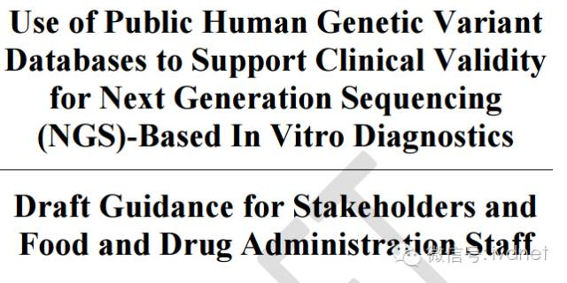

|
|
|


|
|
|||||||||||||
|
|||||||||||||
|
FDA发布两份NGS体外诊断指南
发布时间：2019-1-17 14:36:30
近日，美国国立卫生研究院宣布投入5500万美元用于精准医疗计划，并建立至少包含100万名志愿者的全国精准医疗研究，同时FDA公布了两份NGS体外诊断指南草案。 指南一：《基于NGS的遗传性疾病体外诊断指南》
指南链接
第一份指南标题为《基于NGS的遗传性疾病体外诊断指南》，分为八部分，包括前言、背景、范围、遗传性疾病NGS检测的分类和上市前审查、遗传性疾病NGS检测涉及的要素、遗传性疾病NGS检测的设计、开发和验证指导建议、修正和其他资源。
范围
该指南将为遗传性疾病的NGS检测提供设计、开发及验证指导建议；测试开发人员可遵循该指南为检测方案的上市做准备；该指南中的建议适用于遗传性疾病的检测，无论结果直接面向患者还是医务人员均可适用，但当检测结果直接面向消费者时，需增加额外的建议和管理。
该指南不适用于仅以诊断为目的的NGS检测，也不适用于以筛查、微生物基因检测、风险预测、细胞游离DNA检测、胎儿检测、胚胎植入前遗传检测、肿瘤基因组检测、RNA测序或伴随诊断为目的的检测，因为这些检测具有该指南未包含的其他特征。
遗传性疾病NGS检测的分类和上市前审查
迄今为止，FDA已了解了部分单基因疾病、疾病特异性、靶向检测及NGS检测等。然而，FDA未曾对遗传性疾病NGS检测进行分类，因此该类检测在法律中被自动归为III类，目前还未有合法的市场管理来审查NGS检测上市前的通知。因此，该指南草案考虑将基于NGS的遗传病检测归为II类检测以及免除上市前通知的要求。从长远来看，FDA考虑如何将这些指导建议制成标准规范，以及能否通过FDA的特殊管理来豁免上市前通知的规定。根据该指南，目前这类检测必须获得FDA批准后才能上市。
遗传性疾病NGS检测涉及的要素
基于NGS的临床检测通常涉及到试剂、耗材、仪器和软件。不同的检测目标对应着不同的试剂、耗材、仪器和软件，因此不同的NGS检测有不同的设计方案和工作流程。
遗传性疾病NGS检测的设计、开发和验证指导建议
指南指出，开发人员首先应该确定检测的适应症，因为这决定了检测的方向；在确定适当的检测性能时，开发人员应该前瞻性地确定研究类型以及阈值。在检测的设计和开发完成之后，应进行试验验证是否达到预定义的效果。若验证结果中有一项未达到要求，则必须对试验进行修改并重新验证，直到验证结果达到预定义的性能为止，设计、开发和验证是一个周期，应时刻保持完整。在此过程中，开发人员应该记录所有的检测行动、决定和结果，以及执行这些检测的理由。
修正
重新评估检测性能之前总要先进行试验修正，FDA对试验修正提出了以下几点建议：
应准备好与试验修正有关的所有文档，包括协议，例如软件更新和其他生物信息学渠道的修正；
在修正试验之前，应该先准备好能生效的详细SOP，SOP文件应表明预期的修改方案以及修改试验相关的补充程序，包括后续使用的验证研究类型、必须达到的性能指标和阈值；
利用足够量的特征样本进行二次验证，记录样本的数量和类型，并说明选择这些样本的理由；
记录修正后使用的验证研究类型，并记录修正后的测试性能；
恰当时期重新生效整个检测方案；随着时间的推移，若需进行多重修正，应分别评估每一次修正以及多次修正整合后的结果；
若在现有panel中添加新的基因，应对panel上的原始基因进行评估检测和文档记录。若修正后的测试未达到要求，则要重新设计检测方案；
应准备一个程序来解释内部和外部数据库的更新以及这些更新对临床变体解释的影响。记录每一次更新，包括名称、位置和新版本的数据库。
指南二：《使用公共人类遗传差异数据库来支持基于NGS的体外诊断的临床有效性》  指南链接
第二份指南为《使用公共人类遗传差异数据库来支持NGS体外诊断的临床有效性》，该指南分为五部分，包括前言、背景、范围、建议将人类遗传变异数据库中的公开数据作为NGS检测临床有效性的科学证据、FDA基因变异数据库的识别过程。
该指南中所讨论的遗传变异数据库只包括人类遗传变异，不包含用于微生物基因组鉴定、抗菌素耐药性检测以及标记毒性的数据库，本指南对分类和解释遗传变异的软件也不适用。
该指南建议测试研发人员使用可公开访问的遗传数据库中的信息来验证检测方案能否准确预测疾病，而不仅仅局限于各个单位的独立数据。FDA希望以此来加速基于NGS的体外诊断进入市场的步伐。
来源：生物探索/小桔灯网 |
|